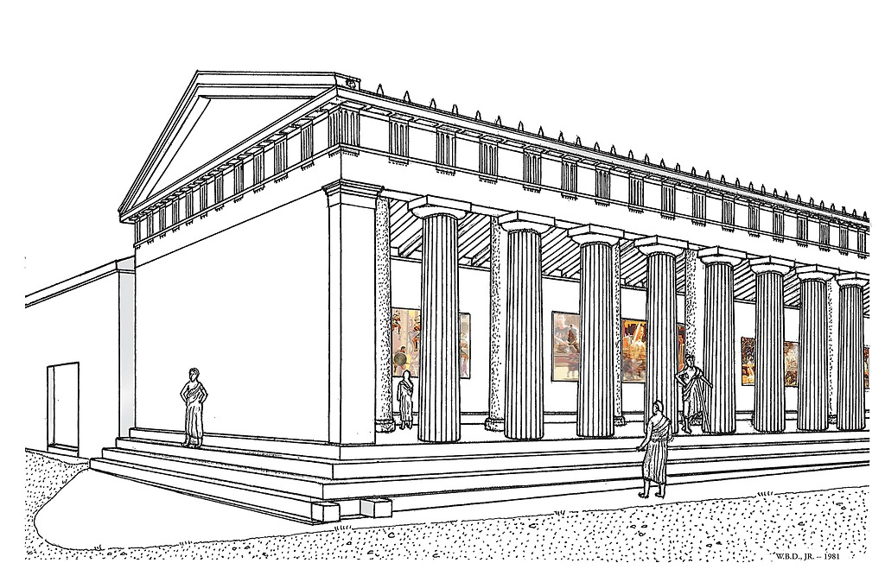
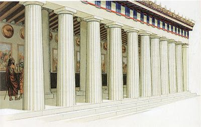

Oleh Melani Putri Devita Sari
NIM : 11210251000110 - KELAS 5A
Novel Self-Improvement dan stoicisme
mental tangguh masa kini.
Lebih dari 2.000 tahun lalu, sebuah mazhab filsafat menemukan akar masalah dan juga solusi dari banyak emosi negatif. Stoisisme, atau Filosofi Teras, adalah filsafat Yunani-Romawi kuno yang bisa membantu kita mengatasi emosi negatif dan menghasilkan mental yang tangguh dalam menghadapi naik-turunnya kehidupan.
Jauh dari kesan filsafat sebagai topik berat dan mengawang-awang, Filosofi Teras justru bersifat praktis dan relevan dengan kehidupan Generasi Milenial dan Gen-Z masa kini.
Hal yang menarik dari Filosofi Teras ini terletak pada tujuannya yaitu hidup dalam ketenangan dan terbebas dari emosi negatif. Oleh karena itu, pada setiap bab Filososfi Teras terdapat pelajaran yang diambil, salah satunya yaitu dalam menjalani kehidupan harus selaras dengan alam.
Di mana kehidupan berjalan sesuai kehendak pencipta-Nya dan selaras dengan alam itu berarti kita harus mengandalkan akal kita agar tidak terbawa arus yang menyimpang. Apalagi sekarang ini banyak di antara kita yang menggunakan medsos dan sering ditemui berita hoaks, sehingga kita tidak boleh terbawa emosi dan tidak baperan. Satu hal yang haru kita ingat, jangan terlalu memikirkan hal yang belum terjadi ke depannya, biarkan berjalan sebagaimana mestinya, namun tetap diiringi dengan effort supaya mendapat hasil yang maksimal. Secara keseluruhan buku ini menarik dan recommended banget untuk dibaca.
Dengan berfokus hanya pada hal yang penting saja, anda bisa menghemat energi berkali-kali lipat dari sebelumnya. Stress dan burnout, terjadi karena penggunaan energi kita yang tidak efektif pada emosi negatif. Bukan karena bekerja keras secara fisik. Sebaliknya, berfokus pada hal-hal yang bukan merupakan kendali kita, membuat kita cenderung mengeluarkan emosi negatif. Dan emosi negatif ini, menguras cadangan energi lebih banyak daripada bekerja keras secara fisik.
 
GENERASI MILINEAL
Teras justru bersifat relevan dengan kehidupan Generasi Milenial dan Gen-Z.
EMOSI NEGATIF
Hal yang menarik dari Filosofi Teras ini terletak pada tujuannya yaitu hidup dalam ketenangan dan terbebas dari emosi negatif.
MENGURAS ENERGI LEBIH BANYAK
Emosi negatif ini, menguras cadangan energi lebih banyak daripada bekerja keras secara fisik.
Untuk selengkapnya, klik disini!